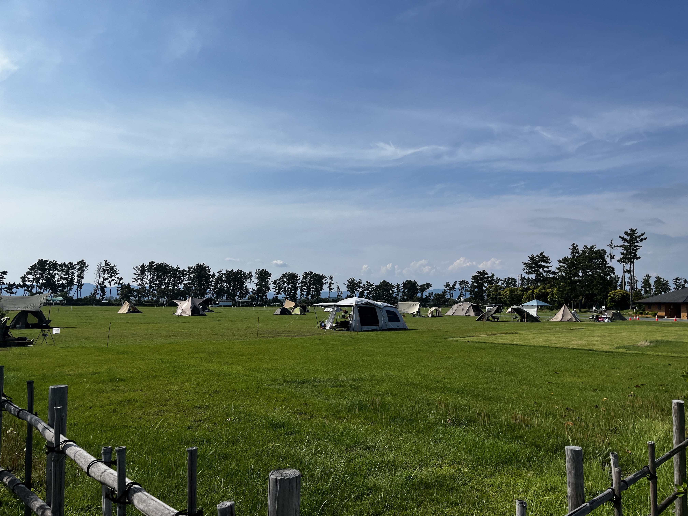

// CONTENTS

Koan Camping Site
A camping ground beside the Lake Motosuko. At Kouan Campsite you can camp on the lakeside or the forest tent site. Amazing Mt.Fuji views and the location has the best camp. Also a place thats famous for its appearence in the first episode of the TV anime Yuru Camp.
Learn More

Fumotoppara Campgrounds
Fumotoppara is a campsite at the foot of Mt. Kenashi, 830m high from sea level, blessed with the beauty of nature.
Learn More

Jinbagatayama Camping Site
Mount Jinbagata (陣馬形山, Jinbagatayama) is a 1,445-meter-high mountain located in Nakagawa Village, Nagano Prefecture, Japan. Affectionately known as the "Campsite in the Sky"
Learn More

Nagisaen Camping Site
Located in Maisaka-cho, Chuo-ku, Hamamatsu, Shizuoka Prefecture, “Nagisaen Campground” is a camping spot set on a “floating island” created by reclaiming part of Lake Hamana, where nature and urban life blend harmoniously.
Learn More